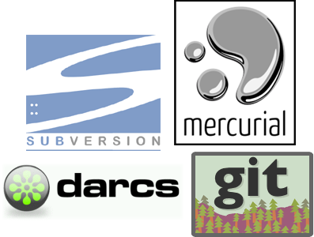
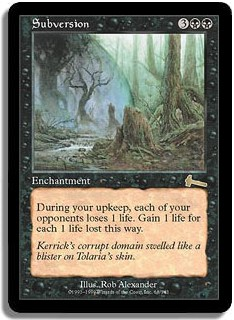
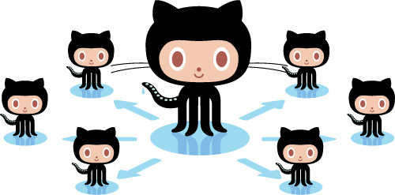

Everyday Source Control
What is Source Control
- "Revision control"
- "Version control"
- "Software configuration management"
Wikipedia
- "The management of changes to documents, programs, and other information stored as computer files."
- yawn
Our definition:
- "Process and tools to obtain the latest code for your project, then merge and store your changes in the code repository"
Choices


Today: Subversion

Later: Git
- (We use it a lot)
Significance in software development
Source control is
- Pervasive, intrinsic
- Ubiquitous but varied
Code goes in SC.
- Always.
Why?
- Track and document
- Collaborate
- Store and backup code
Backups aren't good enough

The rest of the world
Publish
- SourceForge
- Github
- Google Code
Share
- solicit input, feedback, criticism
- patches, forks, pull requests
How Atomic uses source control
All code is in source control
- Git
- SVN
- (still use both)
All code is under CI
- (Continuous Integration)
- Watches our repositories for changes
- No SC => No CI
All repos available to all employees
- ...and sometimes the customer
- Web tools for discovering and exploring repos
Prefer command-line tools
- We want help (and power), not more work!
- (though sometimes a GUI is nice)
- Command-line is simpler (really!)
Always up-to-date
- You have the latest code to work on
- So should your coworkers
- ...SO CHECK IT IN!
Not just for "code"
- Sales proposals
- Invoices and POs
- Electronic books
Personal use
- We all have repos
- Intra-office collaboration (RSS!)
- Games
- Language / tool exploration
Atomic OSS
- http://github.com/atomicobject
- (SourceForge / RubyForge)
Subversion
A day in the life
Let's skip the beginning
- SVN has 33 commands
- You care about 5 commands
- There's already a repo
Checkout -> (edit) -> Commit
svn checkout
- (svn co)
$ svn co https://svnserver/sample_proj A sample_proj/README.txt A sample_proj/Hello.java
svn log
$ svn log ------------------------------------------------------------------------ r1598 | crosby | 2011-09-20 20:27:47 -0400 (Tue, 20 Sep 2011) | 1 line Sketched Hello.java ------------------------------------------------------------------------ r1597 | crosby | 2011-09-20 19:55:48 -0400 (Tue, 20 Sep 2011) | 1 line Starting SVN sample for Everyday Source Control ------------------------------------------------------------------------
Edit some code
- Modify Hello.java to print the time
Hello.java
class Hello {
public static void main(String args[]) {
System.out.println("Hello, World!");
}
}
Change that println to:
System.out.println("Hello, World, the time is " + new Date());
svn status
- (svn st)
$ svn st M Hello.java
svn diff
$ svn diff
Index: Hello.java
===================================================================
--- Hello.java (revision 1598)
+++ Hello.java (working copy)
@@ -1,5 +1,7 @@
+import java.util.Date;
+
class Hello {
public static void main(String args[]) {
- System.out.println("Hello, World!");
+ System.out.println("Hello, World, the time is " + new Date());
}
}
svn commit
- (svn ci)
$ svn ci -m "Printing current date/time along with Hello World" Sending Hello.java Transmitting file data . Committed revision 1602.
...and you can go home.
- The CI server will build and test
- Everyone else can update to your changes
But later...
- You bring down some changes from the server
svn update
- (svn up)
$ svn up U Hello.java Updated to revision 1603.
$ svn log ------------------------------------------------------------------------ r1603 | fox | 2011-09-22 00:22:34 -0400 (Thu, 22 Sep 2011) | 2 lines Added separators above and below the hello msg ------------------------------------------------------------------------ r1602 | crosby | 2011-09-22 00:10:35 -0400 (Thu, 22 Sep 2011) | 1 line Printing current date/time along with Hello World ------------------------------------------------------------------------ r1599 | crosby | 2011-09-20 21:14:12 -0400 (Tue, 20 Sep 2011) | 1 line Added CHANGELOG area to README.txt ...
svn diff -rXXXX:YYYY
- Specify revisions to compare
$ svn diff -r 1602:1603
Index: Hello.java
===================================================================
--- Hello.java (revision 1602)
+++ Hello.java (revision 1603)
@@ -2,6 +2,8 @@
class Hello {
public static void main(String args[]) {
+ System.out.println("-------------------------------------------------------------------------------");
System.out.println("Hello, World, the time is " + new Date());
+ System.out.println("-------------------------------------------------------------------------------");
}
}
Append some output
...
System.out.println("Thanks!");
...
Attempt to commit...
$ svn ci -m "Added a quick thanks to the end" Sending Hello.java svn: Commit failed (details follow): svn: File or directory 'Hello.java' is out of date; try updating svn: resource out of date; try updating
Update to the latest code...
$ svn up
Conflict discovered in 'Hello.java'.
Select: (p) postpone, (df) diff-full, (e) edit,
(mc) mine-conflict, (tc) theirs-conflict,
(s) show all options:
Edit the file
(Remove conflict markers)
System.out.println("Hello, World, the time is " + new Date());
System.out.println("-------------------------------------------------
.mine
System.out.println("Thanks!");
=======
System.out.println("Thank you very much.");
>>>>>>> .r1604
Decide to keep your changes:
System.out.println("Hello, World, the time is " + new Date());
System.out.println("-------------------------------------------------
System.out.println("Thanks!");
Save and exit
$ svn st ? Hello.java.mine ? Hello.java.r1603 ? Hello.java.r1604 C Hello.java
Mark conflict as resolved
$ svn resolved Hello.java Resolved conflicted state of 'Hello.java $ svn st M Hello.java
- (then commit)
Fancy stuff?
- Branching / merging
- History visualization
- svn blame
(Another day)
Creating a local SVN repository
$ mkdir -p repo $ mkdir -p template/branches; mkdir template/tags; mkdir template/trunk $ svnadmin create repo/new_project $ svn import -m "Starting new_project" template file:///Users/dcrosby42/ repo/new_project Adding template/trunk Adding template/branches Adding template/tags Committed revision 1. $ svn co file:///Users/dcrosby42/repo/new_project/trunk new_project Checked out revision 1. $ cd new_project/
- STAY OUT OF repo/ !!!
- (Delete template/)
Git
Our other first choice
Git Advantages
- Branch / merging heaven
- Distributed development path
- Popular, social
- FAST
Git = Independence
- no network
- no server
- no perms
- ...until you're ready
Links
This presentation
atomicobject.github.com/source_control
Tools we used to build this preso:
Thanks!
- {karlin,dave}@atomicobject.com
- need a summer internship?
- atomicobject.com/jobs